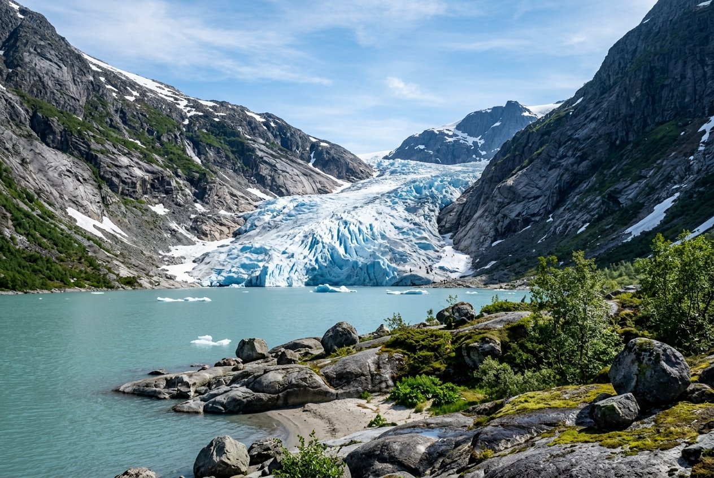
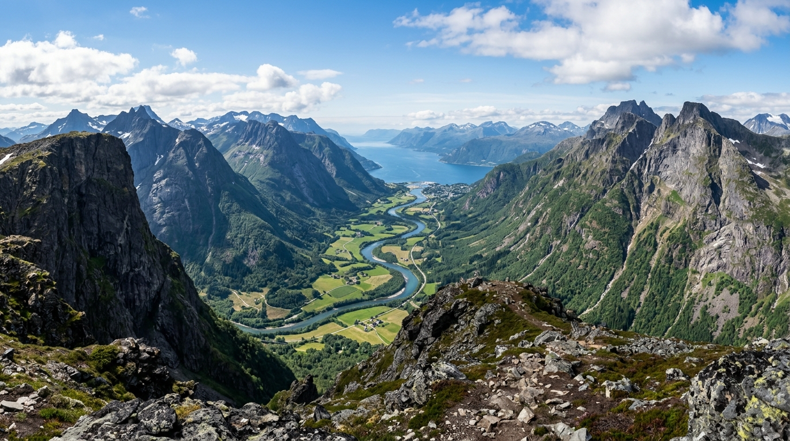

Landformer som er dannet av isbreer
En er en masse av is og snø som er i bevegelse. Den lager både erosjonsformer i fast fjell og løsmasseformer der den smelter.

er lengre tidsrom der temperaturen er lavere enn normalt og større områder er dekket av is. I kvartærtiden (som startet for 2,6 millioner år siden) har det vært 50 tydelige klimasvingninger. Det var aller kaldest for rundt 22 000 år siden, da innlandsisen nådde helt til kanten av kontinentalsokkelen i vest og ned til Nederland, Tyskland og Polen i sør.
For 11 600 år siden (Ra-tiden) kom den milde Golfstrømmen tilbake, temperaturen steg raskt, breene smeltet tilbake, og de første menneskene kom til Norge. For ca. 8000 år siden var landet trolig helt isfritt. Fra slutten av 1500-tallet til midten av 1800-tallet hadde vi en spesielt kald 250-årsperiode kalt den lille istiden.
Hvordan breer blir til & bretyper
Bredannelsen begynner når en snøfonn ikke smelter bort om sommeren, og nye snøfall trykker snøen sammen til firn og is. De nederste islagene blir plastiske (faste, men formbare) på grunn av tyngden ovenfor, og hele ismassen siger nedover. Største målte hastighet i en brefront i Norge er 1,25 meter per døgn (Engabreen i Nordland). Forskjellen mellom vintersnø og sommersmelting kalles breens .
De fire hovedtypene isbreer: Norge har i dag litt over 2500 isbreer (0,7 % av fastlandet), men breene smelter raskt: I 2024 smeltet 34 av 35 observerte breer i Fastlands-Norge tilbake, og forskere anslår at kanskje bare 10 prosent er igjen i år 2100.
1.
Liten isbre i en skålformet forsenkning (botn) oppe i fjellsiden med bratte skrenter bak og på sidene. Breen graver selv ut botnen, og dette er den vanligste typen småbre i Norge.
2. Dalbre
Lang, tungeformet bre som glir nedover en dal fra et fjellplatå. Kjente eksempler er Nigardsbreen, Briksdalsbreen og Engabreen.
3.
Stor ismasse som dekker et helt fjellplatå og sender dalbreer ned i dalene rundt – f.eks. Jostedalsbreen, Hardangerjøkulen, Folgefonna og Svartisen.
4. Innlandsis
Den aller største bretypen: flere kilometer tykk is over hele landområder, som på Grønland og i Antarktis (og over Nord-Europa under istidene).

Breerosjon: skuring, plukking & rundsva
Skuring
skjer ved at steiner fastfrosset i bresålen virker som sandpapir på berggrunnen og lager skuringsstriper. Erosjonskraften øker med bretykkelsen – i midten av Sognefjorden har breene gravd seg 2000 meter ned i berggrunnen.
Plukking & rundsva
skjer når vann fryser i bergsprekker under breen, og løsnede steiner fryser fast og fraktes videre. En fjellknatt får skuring på støtsiden (mykt avrundet) og plukking på lesiden (tvert avkuttet) – et .

Video: Skuring og plukking
Se hvordan isbreer eroderer underlaget med skuring og plukking. Åpne videoen på YouTube ↗
Alpine landformer: tinder, egger og botner
oppstår når en botnbre graver seg inn i fjellsiden med sterk frostforvitring og danner en skålformet botn (ofte med botnsjø). Når to botner møtes fra hver sin side, dannes en skarp egg. Når tre eller flere botnbreer eroderer rundt en topp, står det igjen en spiss tind.
I Norge finner vi alpine landformer særlig i Jotunheimen, på Sunnmøre, i Lofoten og Lyngsalpene (helt ned til havnivået). Her er det stor interesse for toppturer, men også fare for fjell- og snøskred – hvert år omkommer flere personer i ulykker i alpint terreng.
U-daler og fjorder

Før istidene hadde elvene gravd ut V-daler ned mot en nokså jevn kystlinje. Under istidene gikk brestrømmene gjennom de samme dalene og omformet dem til avrundede , fordi breen fylte hele dalen og eroderte både under og på sidene (sterkest midt i dalen og der brearmer møttes).
En er samme slags landform som en U-dal, men her har breen gravd så dypt at havet trengte inn etter at breen smeltet bort. Fjorder finnes bare i områder som har vært utsatt for iserosjon.
Ordliste
Lisens: Alle fotografiske illustrasjoner og geologiske figurer i Images/ er egenproduserte for dette undervisningsopplegget under åpen lisens (CC0 1.0 / CC BY 4.0).